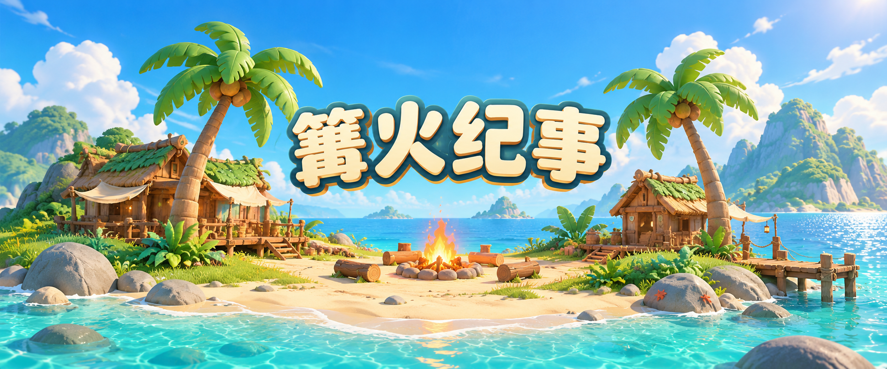

THREE STUDIO · 独立游戏工作室
因热爱而创作。
把好奇，变成世界。
我们是为爱发电three工作室。
从一个小点子出发，认真创造有趣的游戏，
让每一个不同的世界，都值得走进去。
IDEAS INTO PLAY.保持好奇 · 认真创造
01 / THE STUDIO
小小工作室，
不止一种可能。
让想象落地，
让快乐有迹可循。
我们喜欢游戏，也喜欢游戏带来的探索、思考与相遇。从玩法里的小巧思，到世界中的每一处细节，我们希望用耐心，把心里的想法做成你愿意停留的体验。
每一部作品，都可以有自己的性格。我们保持开放与好奇，期待在不同题材、不同玩法中，找到新的乐趣。
02 / OUR GAMES
我们的游戏
不同的世界，同样的用心。

探索这款游戏 ↗01 / SIMULATION & BUILDING
海岛聚落：篝火纪事
一座小岛，围着篝火慢慢成家。
下一个世界，正在想象之中。
MADE WITH CURIOSITY
世界很大，慢慢创造。
愿每一次游玩，都有一点新的发现。
认识我们的工作室